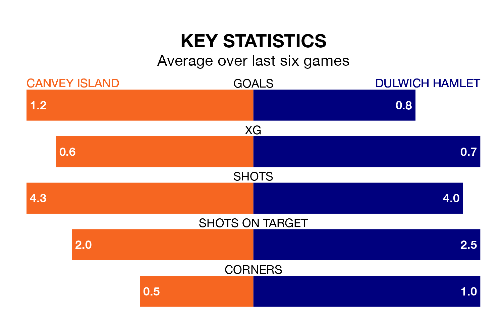

Dulwich Hamlet make the journey to the Brockwell Stadium to play Canvey Island on Saturday looking to pick up points to end their three-game losing streak.
Dulwich Hamlet's struggles have left them with seven points from their last six Isthmian Premier Division matches, while their opponents have earned five from a possible 18.
In the last 10 years, Canvey Island and Dulwich Hamlet have played each other on seven occasions. Canvey Island won three of them and Dulwich Hamlet four.
On average, the Gulls scored 1.3 goals and Dulwich Hamlet 1.7 in those matches.
Their last meeting was on August 15, when Dulwich Hamlet won 4-1 at home.
With 67 goals in 37 games so far this season, Dulwich Hamlet are scoring more than average in the league with 1.8 goals per game. And they are conceding at an average rate, letting in 60 goals at a rate of 1.6 per game.
Canvey Island, meanwhile, are below average scorers, with 1.5 goals per game, compared to a league average of 1.6. They have conceded 1.9 goals per game.
The Gulls are 17th in the table after 36 games, of which they have won 13 and drawn five, earning 44 points.
The away side are seven places ahead of the hosts in 10th, with 15 wins and 10 draws putting them on 55 points.
Canvey Island's last match was on March 30, a 2-0 win against Whitehawk.
Dulwich Hamlet lost 4-0 against Enfield Town last time out, on April 6.
Updated: 10:01 (UTC), 12/04/24